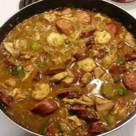

Gumbo Recipe

Ingredients
- 500g chicken breast, cut into chunks
- 1 large onion, sliced
- 1 stick of celery, sliced
- 1 green and 1 red pepper, sliced
- 2 cloves of garlic, finely minced
- 1 tbsp olive oil
- 1 400g tin of tomatoes
- 450ml chicken stock
- 1 1tsp cumin
- 1 tsp smoked paprika
- 1 tsp dried oregano
- 1/2 tsp chilli powder
- 1 tbsp plain flour
- 150g chorizo, chopped into small cubes
- 150g raw king prawns
- 1 courgette, cut into small pieces
Method
- Heat the oil in a large pan over medium-high heat. Add the onions, celery and peppers. Cook until started to soften, 5 minutes
- Add the chicken, and cook until starting to brown
- Add the garlic, flour, and spices, and cook for until the raw flour smell in gone
- Pour in the tomatoes, stock, and chorizo
- Reduce the heat to a simmer, and cover the pan. Cook for at least 40 minutes
- Add in the prawns and courgette, and cook for another 20 minutes
- Serve with crusty bread and tabasco sauce on the side.
Back to main page